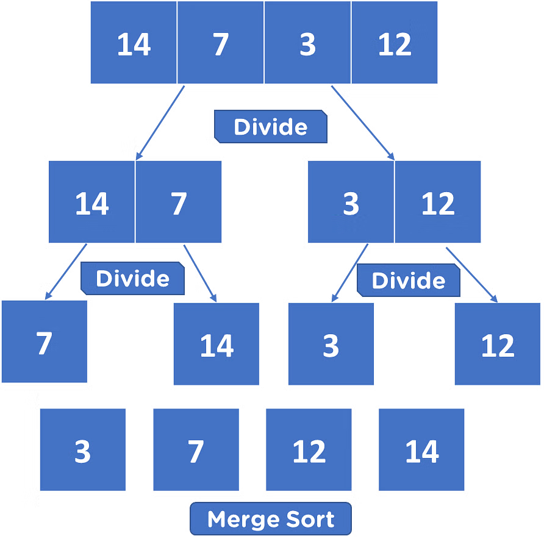

Sorting Algorithms
- There are 2 sorting algorithms:
Bubble sort
Merge sort
counter ← 0
swapped ← True
swaps ← 0
length ← list.length
while swapped == True
while counter < length-1
if list[counter] > list[counter+1] then
temp = list[counter]
list[counter] = list[counter+1]
list[counter+1] = temp
swaps = swaps + 1
endif
counter ← counter + 1
endwhile
if swaps == 0 then
swapped ← False
else:
swaps ← 0
counter ← 0
endif
endwhile
This is the pseudocode for a bubble sort.
In a list of a[3, 1, 2], it would be sorted every pass.
In the first swap,
a[0]will be compared witha[1]and, because3 > 1a swap will be made.The second swap
a[1]will be compared witha[2]and because3 > 2a swap will be made. The first pass is now over as it went through the entire array.Now the prorgram will do an extra pass to check that the data is sorted.
Merge sort
Divide and conquer
- Merge sort example:
 It makes the list smaller and more manageable
Once each item is put back into a pair, it will be compared with the other item in the pair and sorted.
Then the collection of both pairs will be compared and sorted quickly.
It is the fastest sorting algorithm
Last modified: 17 January 2024